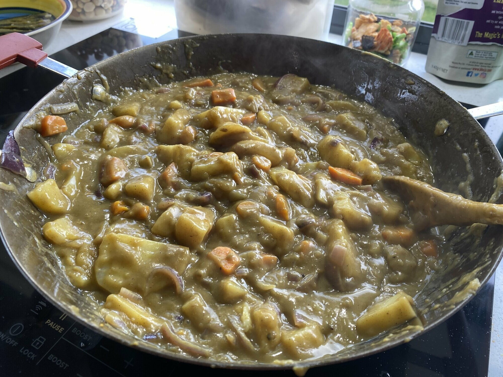

Japanese Curry
 Source
Source Meat
Meat

1 cupbutter3/4 cupplain flour4 tbspcurry powder1 tbspgaram masalasomebrown sugarsomeginger
Make the roux by melting butter and stirring in plain flour, curry powder, garam masala, brown sugar and ginger.
1-2onions
Fry the onions, and then add in curry sauce.
2carrots4potatoes4cups water
Add carrots potatoes cups water to curry sauce and simmer until thickened. Easier if you pre-boil potatoes and carrot.
4chicken schnitzels1 1/2 cupsrice
Serve with chicken schnitzels and rice